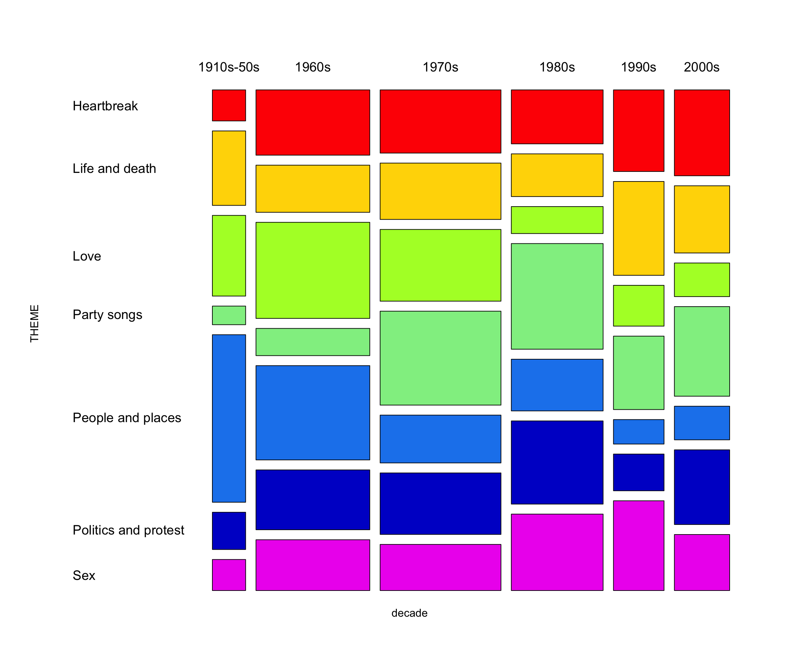
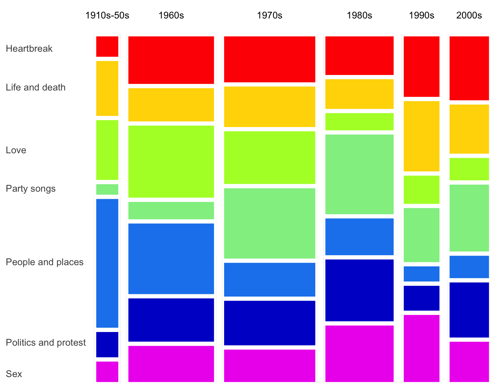
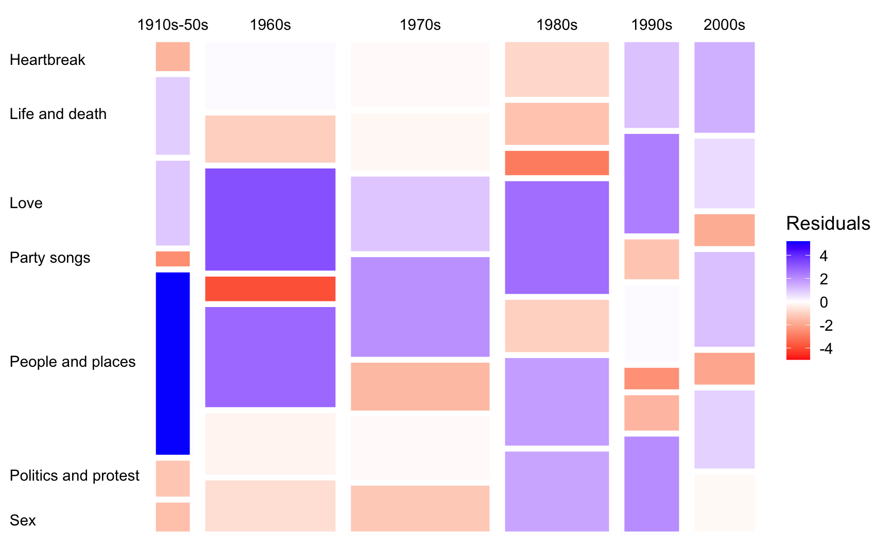

I’m currently teaching a class on statistical graphics and visualization during the summer semester. The class begins with common visualizations for categorical and quantitative data, before moving on to more complex data structures.
Over the last few days, I’ve been prepping materials for categorical data viz. A common graphic for plotting two or more categorical variables is a mosaic plot. (I also just learned that mosaic plots are also called Marimekko.)
Here is an example of a mosaic plot, taken from its Wikipedia page. This is taken from The Guardian’s article on “1000 songs to hear before you die”.

If you’re new to mosaic plots:
A mosaic plot is a spine plot of spine plots.
Column widths represent the marginal distribution of a variable
x.Within each column, rectangle heights represent a conditional distribution
y|x.Rectangle area represents the joint distribution of the variables.
Mosaic plots are useful for visualizing independence: if proportions are the same across groups, the boxes line up into a grid.
Anyway, let’s try to recreate the mosaic plot above.
First, here are the data for plotting.
Show code
In base R, this is straightforward with mosaicplot().
(In fact, I think they used this exact function to make the plot.)
Show code
box_colors <- c("red", "gold1", "greenyellow", "lightgreen", "dodgerblue2", "blue3", "magenta2")
songs |>
select(decade, THEME) |>
table() |>
mosaicplot(cex = 1.2, las = 1, main = NULL, col = box_colors)
There are other packages for making mosaic plots in R such as vcd and vcdExtra.
As a ggplot2 guru, I of course prefer to make my data viz with ggplot2 when possible.
For mosaic plots, the ggmosaic package has been around for awhile.
However, ggmosaic has had recurring issues and has periodically been archived from CRAN.
I also recently came across the marimekko package.
Still, I find the syntax (of both ggmosaic and marimekko) somewhat unintuitive.
For new users in particular, the highly specialized variable-mapping syntax can create a fairly steep learning curve.
So, why not just create a mosaic plot from scratch with ggplot2?
As it turns out, this is not that difficult.
(I’m sure I’m not the first person to do this.)
Show code
songs |>
count(decade = str_c(decade, "\n"), THEME) |>
add_count(decade, wt = n, name = "n_decade") |>
ggplot(aes(n_decade / 2, n, fill = THEME, width = n_decade)) +
geom_col(position = "fill", color = "white", linewidth = 2, show.legend = FALSE) +
scale_x_continuous(expand = c(0, 0), breaks = NULL) +
scale_y_continuous(expand = c(0, 0),
breaks = c(0.03, 0.12, 0.35, 0.56, 0.67, 0.85, 0.96),
labels = rev(sort(unique(songs$THEME)))) +
scale_fill_manual(values = box_colors) +
facet_wrap(~ decade, scales = "free_x", space = "free_x") +
labs(x = NULL, y = NULL) +
theme(strip.background = element_rect(fill = "transparent", color = NA),
strip.text.x = element_text(color = "black"),
strip.clip = "off",
panel.grid = element_blank(),
axis.ticks.y = element_line(color = NA),
axis.text.y = element_text(color = "black", hjust = 0))
Let’s break it down:
I first calculated the total for each decade (
n_decade) in order to size the x-axis.I created a stacked bar chart with
geom_col(), wherexis mapped to the center of the total (n_decade / 2), andwidthis mapped ton_decade.The trick is here faceting. I faceted by
decadeand most importantly, specifiedscales = "free_x"andspace = "free_x"to allow the panels to have different widths.I then enhanced the plot by trimming off different axis elements and adding labels and colors.
I also found out that specifying
strip.clip = "off"withintheme()enables strip text to run off the panel (see “1910s-50s” in the plot).
That’s it!
Next, let’s color the rectangles by Pearson residuals.
Recall that Pearson residuals (r_{ij}) measure the discrepancy between the observed (n_{ij}) and expected (\hat n_{ij}) frequencies under independence, where r_{ij} = \frac{n_{ij} - \hat{n}_{ij}}{\sqrt{\hat n_{ij}}}.
Show code
songs |>
count(decade, THEME = fct_rev(THEME)) |>
add_count(decade, wt = n, name = "n_decade") |>
add_count(THEME, wt = n, name = "n_theme") |>
mutate(n_expected = (n_decade * n_theme) / nrow(songs),
residual = (n - n_expected) / sqrt(n_expected)) |>
ggplot(aes(x = n_decade / 2, y = n, fill = residual, width = n_decade)) +
geom_col(position = "fill", color = "white", linewidth = 2) +
scale_x_continuous(expand = c(0, 0), breaks = NULL) +
scale_y_continuous(expand = c(0, 0),
breaks = c(0.03, 0.12, 0.35, 0.56, 0.67, 0.85, 0.96),
labels = rev(sort(unique(songs$THEME)))) +
scale_fill_gradient2(high = "blue", mid = "white", low = "red", midpoint = 0) +
facet_wrap(~ decade, scales = "free_x", space = "free_x") +
labs(x = NULL, y = NULL, fill = "Residuals") +
theme(strip.background = element_rect(fill = "transparent", color = NA),
strip.text.x = element_text(color = "black"),
strip.clip = "off",
panel.grid = element_blank(),
axis.ticks.y = element_line(color = NA),
axis.text.y = element_text(color = "black", hjust = 0))
Here, I simply added and modified a few lines of code from the previous version. In particular:
I calculated expected count for each
decadeandTHEMEcombination under independence (s/o toadd_count()), and compute the corresponding residuals.I then changed the color palette so that cell with positive and negative residuals are shaded blue and red, respectively.
Note that the residuals can also be binned to show their direction and magnitude. That is, whether the observed counts are substantially, moderately, or slightly higher or lower than expected.
Neat.